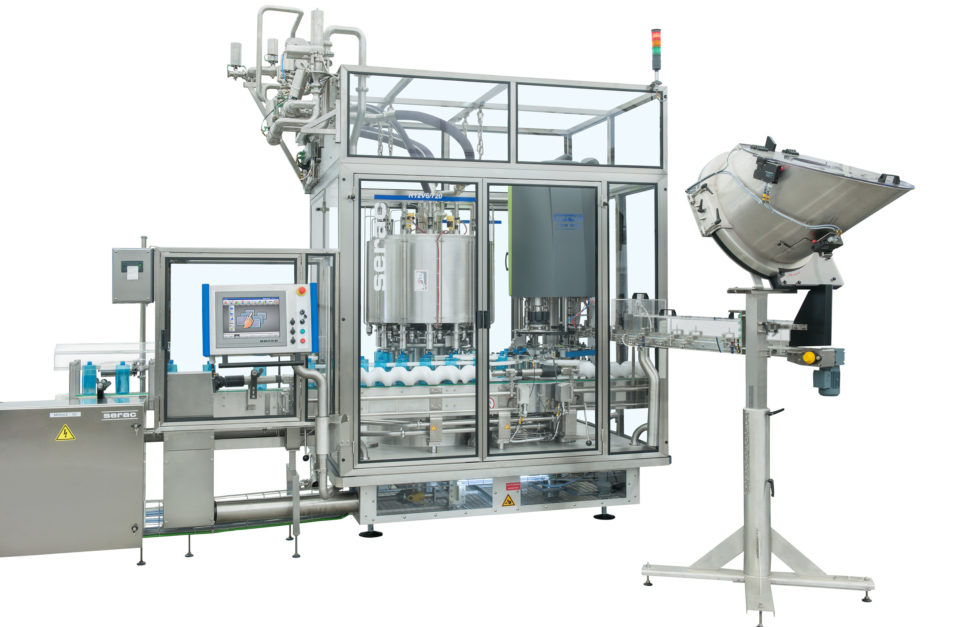

Ligne de conditionnement complète clé en main
De la bouteille vide au produit étiqueté : ligne complète de rinçage, remplissage, bouchage et étiquetage pour sauces, huiles et liquides.

Une ligne clé en main évite les incompatibilités entre fournisseurs : vitesses, hauteurs de convoyeur, recettes PLC et responsabilité unique. KIWL dimensionne la ligne sur votre brief Afrique — pas sur une cadence marketing irréaliste.
Composition typique
- Dévrac / table d'alimentation
- Rinceuse (option)
- Remplisseuse (piston / pompe / poids net)
- Boucheuse + trémie bouchons
- Étiqueteuse + codeur inkjet
- Convoyeurs et table accumulatrice
| Cadence | 1 000 à 6 000+ bph selon format |
|---|---|
| Formats | 50 ml – 5 L (changement d'outillage) |
| Contrôle | PLC + écran tactile, recettes produits |
| Livraison | FAT Chine + assistance installation |
Pour démarrer plus petit : semi-automatique. Pour gagner de la place : monobloc.
Responsabilité unique vs multi-fournisseurs
Assembler soi-même une rinceuse d'un fournisseur, une remplisseuse d'un autre et une étiqueteuse d'un troisième multiplie les conflits de garantie. La ligne clé en main KIWL place la performance globale sous un seul contrat technique.
Nous documentons les recettes, les vitesses convoyeur et les procédures de changement de format pour que votre équipe reproduise le FAT chez vous.
Exemple de dimensionnement
Objectif 3 000 bph en PET 500 ml sauce : typiquement remplisseuse multi-têtes, boucheuse synchronisée, étiqueteuse wrap-around, inkjet, et accumulation en sortie pour absorber les micro-arrêts carton. Nous vérifions que chaque poste tient la cadence avec une marge de 10–15 %.
Objectif 800 bph en démarrage mayo : semi-auto piston + boucheuse simple peut suffire la première année, avec emplacements réservés pour automatiser ensuite. Cette trajectoire protège votre trésorerie.
Utilités et environnement
Air comprimé propre, alimentation électrique stable, sol drainé pour lavage : ces prérequis conditionnent la réussite autant que la machine. Nous fournissons une liste utilités avec l'offre pour que votre électricien / plombier prépare le site avant l'arrivée du conteneur.
Formation et documentation
Manuels, schémas électriques, listes pièces et vidéos de réglage accompagnent la ligne. Vos techniciens peuvent reproduire les recettes du FAT. En cas de doute, WhatsApp relie directement l'équipe qui a assemblé la machine — un avantage fabricant usine face au trading pur.
Anticipez magasin pièces locales pour les joints courants : cela coupe les délais d'arrêt.